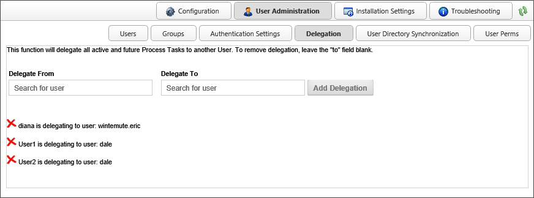
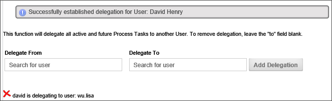

|
|
Lesson Contents | In this Lesson, you will learn how to perform task delegation as both a user and administrator. |
Tasks assigned to one user can be delegated to another user. There are three primary ways in which delegation can be assigned, two of which are performed at the administrative level. The remaining delegation method can be performed by users by modifying their own profiles, and we will address this method first.
When a user delegates to another that is already running in the same step/activity, the original user is cancelled and the other user is left running. When undelegating, there is an option that will allow the original cancelled user to be restarted if that step/activity is still running. To enable this option, set the fEnableUndelegationRestart custom variable to "true". If this option is not set, then the delegated user's task will be canceled, but the original user's task will not be restarted, and the task will be canceled for both users.
For Process Director v4.03 and higher, the system will prevent users from delegating tasks to a user who is already delegating tasks to them. In other words, if User A is delegating tasks to User B, User B will be prevented from delegating tasks to User A. This loop checking only prevents a direct delegation loop between two users, and will not prevent indirect delegation loops that involve three or more persons.
Users may delegate their own tasks to another user by modifying their user profile via the following procedure.
First, open the user information box by clicking the user menu icon located at the top left corner of the Process Director interface.

When you click the icon, the user information box will appear.

Once the user Information box appears, click the Edit Profile button to open your User Profile screen. On the User Profile screen, there is a delegation picker displayed.

Select the User Picker to open the type ahead box and begin typing a user name to expand the type ahead dropdown containing the list of matching users. Select a user to which to delegate by choosing the user from the type ahead dropdown. You can use the arrow keys to scroll the selection cursor up and down, then press the [ENTER] key to make your selection, or you can select the user with your mouse.

Once the user list type ahead has closed, the selected user will now appear in the delegation user picker. Confirm the delegation by clicking the Delegate User button.

A confirmation dialog box will appear to ask you to confirm the delegation.

Click the OK button to confirm the delegation. The dialog box will close, the delegation will take effect.

You can end the delegation by clicking the Turn Off Delegation button. Again, a dialog box will appear that asks you to confirm that you wish to turn off the delegation. Click the OK button to turn off delegation to the previously selected user.
When you have made the appropriate delegation decision, click the OK button at the bottom right of the User Profile screen to close it.
Administrators can perform delegation on behalf of users by making the delegation change in the Edit User screen for a specific user, or in the User Administration section's Delegation Screen.
From the Users section of the User Administration area, open the Edit User screen of the user for which you wish to perform delegation. There is a User Picker labeled Delegate all tasks to (User).

Select the User Picker to open the type ahead box and begin typing a user name to expand the type ahead dropdown containing the list of matching users. Select a user to which to delegate by choosing the user from the type ahead dropdown. You can use the arrow keys to scroll the selection cursor up and down, then press the [ENTER] key to make your selection, or you can select the user with your mouse.

Once the user list type ahead has closed, the selected user will now appear in the delegation user picker. Confirm the delegation by clicking the Delegate Tasks to User button.

A confirmation dialog box will appear to ask you to confirm the delegation.
Click the OK button to confirm the delegation. The dialog box will close, the delegation will take effect.
You can end the delegation by clicking the Turn Off Delegation button. Again, a dialog box will appear that asks you to confirm that you wish to turn off the delegation. Click the OK button to turn off delegation to the previously selected user.

When you have made the appropriate delegation decision, click the OK button at the bottom right of the Edit User screen to close it.
In the delegation section of the User Administration area, you can set or remove multiple delegations. The screen also displays the currently active delegations, as displayed in the example below.

Use the User Pickers to select the from whom the tasks should be gelegated, and the user to whome tasks should be delegated.
Once you have set both users for the delegation, click the Add Delegation button to create the delegation.

The delegation will be created immediately, and will appear in the delegation list at the bottom of the Delegation screen, and a message will appear notifying you that the delegation has been successfully created.

To remove a delegation, simply click the delete icon ( ) next to the delegation you wish to remove. The delegation will be canceled and a message will appear that notifies you that the delegation has been removed.
) next to the delegation you wish to remove. The delegation will be canceled and a message will appear that notifies you that the delegation has been removed.